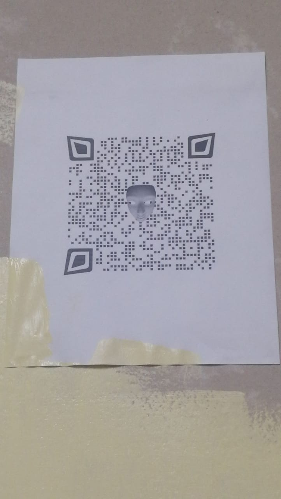
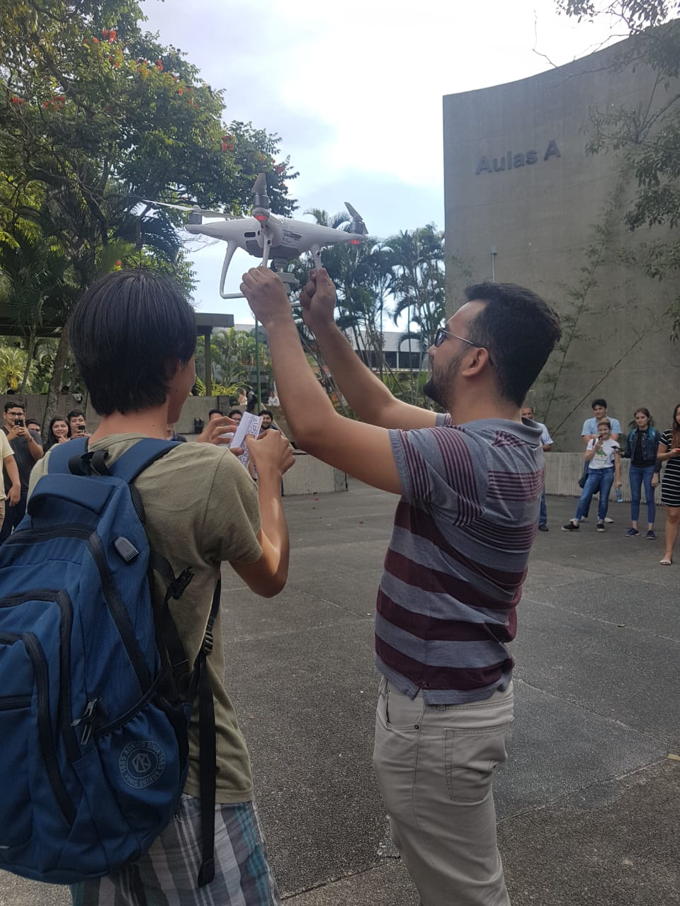
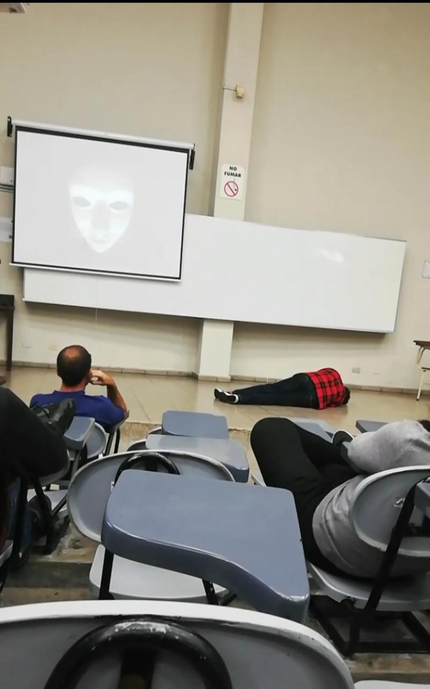

Lunes: "The Beginning"
El primer día mostraron un video en donde conocemos a Ale Rav, que nos cuenta su plan
para destruir la universidad y de como nadie puede detenerlo, luego escuchamos un audio en
donde se presenta Kurt quien para fortuna de nosotros conoce el plan de Ale Rav y tiene un plan para detenerlo,
pero necesita nuestra ayuda. Kurt nos deja indicaciones mediante codigos QR que dedemos escanaer para conocer
las indicaciones y la primera es realizar una función que verifique que los DUI ingresados en la tabla miembro
sean válidos.
El primer paso a cumplir es verificar que el DUI ingresado tenga la longitud correcta y que tenga un guión en la posición correca,
para eso utilizamos un if con la siguiente condición length(Dui)!=10, si retorna falso en ese momento termina nuestra
función puesto que el DUI no cumple la primera condición, si la condición resulta cierta pasa a verificar si el DUI posee un guión en la novena
posición, después si el DUI pasa ambas condiciones procedemos a verificar que este contenga solo caracteres númericos, una vez comprobado esto
pasamos a comprobar si el dígito de comprobación es correcto, esto lo hacemos con FOR multiplicador IN REVERSE 9..2 LOOP
dentro de este for se comprueba que la sumatoria de las posiciones de número multiplicadas por el número correspondiente dividido por la
longitud del DUI, luego tomamos el residuo de esa división y se lo restamos a la longitud, si el resultado de esa resta es igual al número verificador
entonces nuestro DUI es correcto.

Martes: "O-O-O"
Una vez resuelto el primer ejercicio, este nos mostraba un link que nos redireccionaba a una felicitación de Kurt y tambien a nuevas instrucciones
en las cuales nos hablaba de un segundo aliado el cual nos ha dejado un mensaje en escondido en algún lado, Kurt sospecha que esta
en el polideportivo, así que nos invita a buscar ahí la siguiente pista.
Una vez encontrada la pista nos pide lo siguiente: Crear dos trigger uno que verifique que el representante de cada departamento trabaje en dicho departamento
y el segundo que impida la actualización o eliminación de este miembro hasta que se haya escogido a otro representante, y todo esto dentro de una función.
Para esto utilizamos un if que en el momento en que reciba la una instrucción update o insert verifique si este miembro trabaja en dicho departamento
mediante una consulta con la cual obtenemos el departamento del miembro a actualizar para luego comparar este resultado con el departamento que hemos ingresado previamente
si retorna false se rechaza la actualización o inserción del miembro.

Miercoles: "Minus Monocromo"

En el tercer día nos pide que busquemos a Renacho Melgar un pintor a cargo de mural en honor a los padres Jesuitas, Alba y Celina,
lo ha escogidoa él como aliado pues le ha parecido que es lo contrario a Ale Rav. A Renacho debemos preguntarle si conoce a Kurt y de paso ayduarle
en el mural si así lo deseamos, Renacho nos muestra otro QR con las siguientes instrucciones: Crear una función y un trigger que compruebe que al
ingresar un miembro perteneciente a X departamento, tenga la misma denominación_departamento en ambas tablas y cuando se actualice el atributo departamento
de miembro, entonces debe moverse al miembro a la subclase que corresponda.
Comenzamos con un if que compare la denominacion del departamento ingresado con el departamento "ingeniería"
y de no ser igual rechaze la inserción, hacemos lo mismo para los otros dos departamentos, una vez se ha comprobado
que pertenece previamente a uno de los departamentos se añade.
En el caso de la actulización siempre se comprueba que pertenezca a uno de los departamentos, después se elimina de
ese departamento para luego ser añadido mediante una trasacción a su nueva subclase.
Jueves: "Cumulonimbus"

Ale Rav aparece de nuevo más enojado que nunca pues ha descubierto que alguien quiere sabotear su plan,
Kurt nos pide ayuda una ultima vez, solo para comprobar que seguimos de su lado, esta vez nos soprende
la poca discreción de su pista, supongo que como es el final ha querido lucirse, nos envía un drone con la siguiente
instrución: Una función que cuando la elimine a algún elemento de las subclases lo eliminen automáticamente de la superclase,
una función para comprobación de que los proyectos están siendo introducidos en la subclase correcta y
una función que, dado que la especialización es disjunta, garantice que no pueda existir el mismo objeto en más de una subclase.
Para el primer ejercicio, hemos declarado un trigger que cuando se borre a alguien de alguna subclase, este busque a ese miebro
en la superclase y de la tabla proyectos, para el segundo mediante un if se comprueba si el tipo de proyecto es "O" y que si se ha introducido
en alguna subclase de ser cierto nos arrojara que el proyecto ha sido introducido en una clase incorrecta y seguimos el mismo procedimiento
con las subclases siguientes.
Viernes: "Commit;"

¡HEMOS VENCIDO! Y por fin conocemos a Kurt, que nos explica sus planes ahora que hemos vencido a Ale Rav,
desafortunadamente algo le pasa a Kurt y no logra cumplir sus planes, pero como es muy precavido nos deja un
último codigo el cual nos dirige un video en el cual expone la identidad de Ale Rav, quien resulta ser nuestro
antigüo catedratico Erick Varela, ahora teniendo este video como evidencia podemos terminar la misión de Kurt y
poner la denuncia ante las autoridades respectivas. A todo esto ¿estará Ada a salvo?